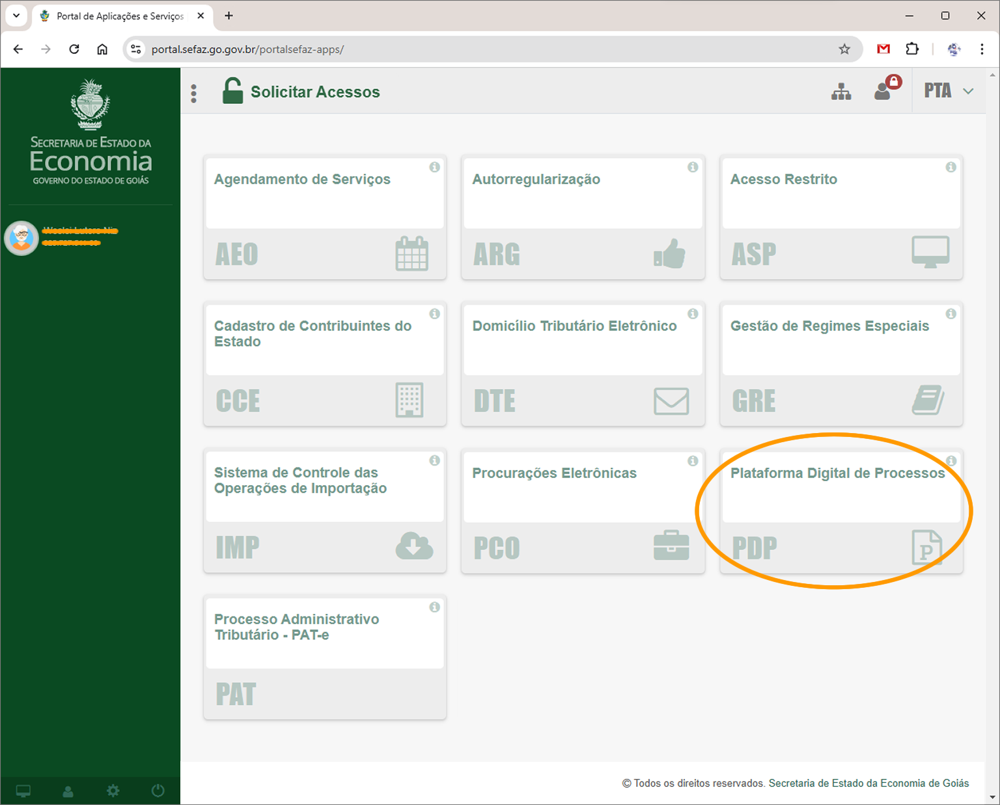
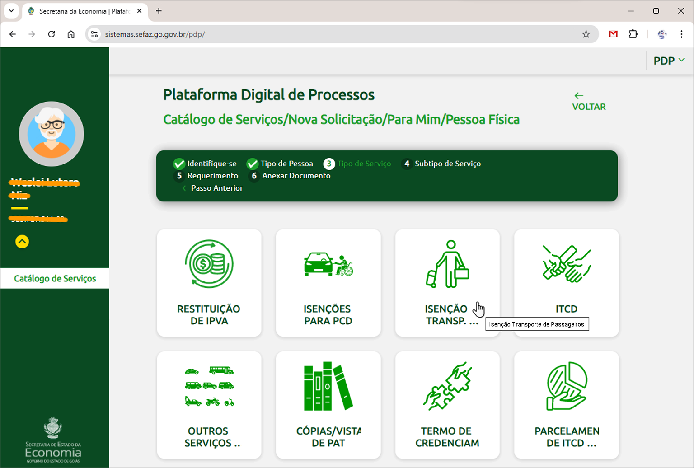
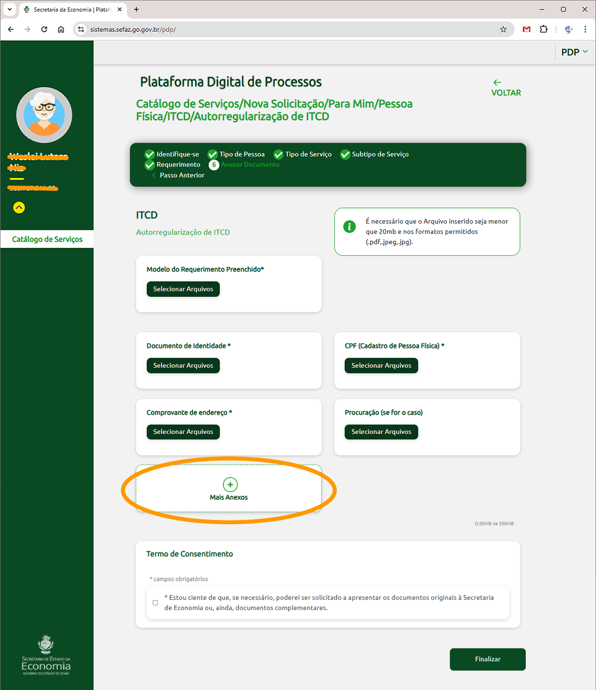
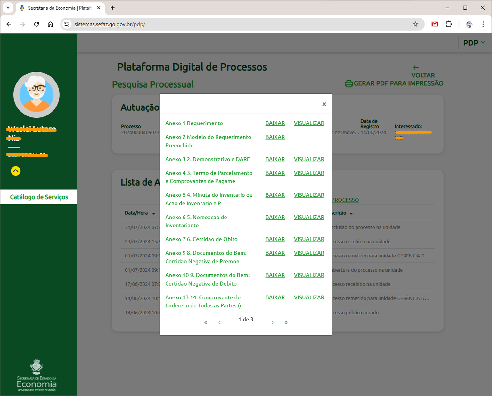
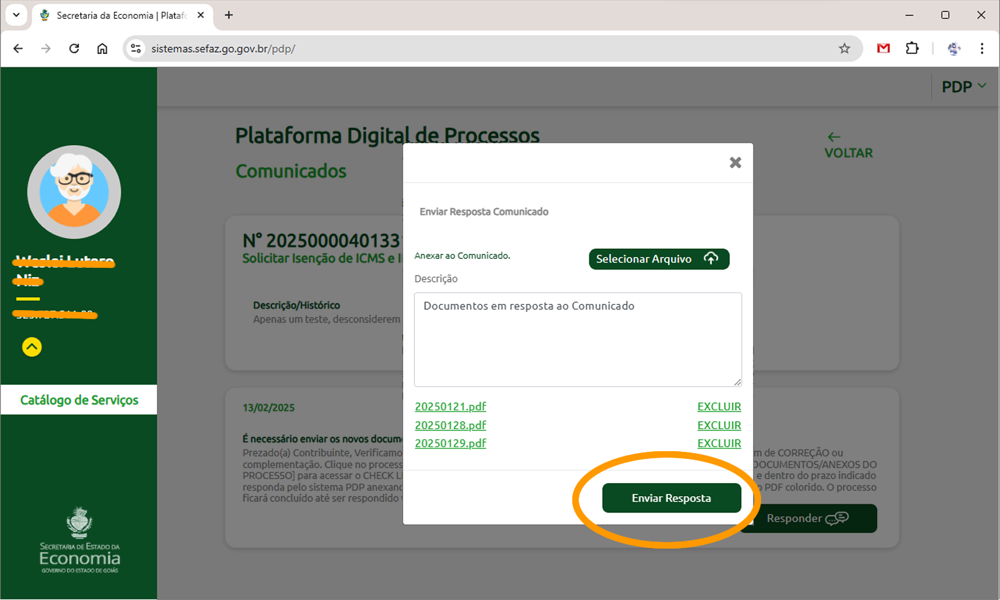
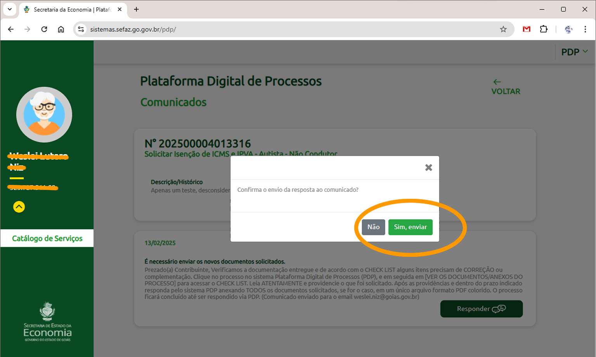

A Plataforma Digital de Processos (PDP) é uma ferramenta desenvolvida para modernizar e otimizar a
gestão
de processos e serviços, com foco na melhoria da experiência do cidadão contribuinte, especialmente
na
Secretaria de Economia. Entre suas principais características, destacam-se:
Interface Amigável:
A PDP oferece uma experiência intuitiva, permitindo que qualquer pessoa, mesmo com pouca
familiaridade com tecnologia, possa cadastrar e acompanhar seus processos com facilidade.
Gestão de Documentação:
A plataforma garante que todos os documentos necessários sejam apresentados desde o início do
processo ou atendimento, eliminando a necessidade de solicitações adicionais e acelerando o
andamento dos procedimentos.
Notificações e Comunicação Proativa:
Notificações automáticas mantêm os cidadãos informados sobre o andamento de seus processos,
além
de alertar sobre a necessidade de ajustes ou documentos complementares. Isso assegura maior
transparência e eficiência em toda a jornada do processo.
Transparência e Conclusões Rápidas:
A PDP proporciona maior confiança ao permitir que os cidadãos acompanhem de forma clara o
status
de suas solicitações e garante agilidade na conclusão dos processos.
Essa plataforma é um exemplo de como a tecnologia pode ser utilizada para simplificar a burocracia,
promovendo um governo mais ágil e alinhado com as necessidades dos cidadãos e gestores.
Pessoa Física: Utilize seu CPF (Cadastro de Pessoas Físicas) e
Senha, mesmo que esteja utilizando um Certificado Digital.
Pessoa Jurídica: O acesso deve ser realizado exclusivamente por meio do
Certificado Digital.
Passo a Passo para Logon:
Insira o número do seu CPF e a Senha já cadastrada.
Clique no botão Autenticar para prosseguir.
Caso ainda não possua cadastro, siga os passos a seguir
para
criá-lo:
Como realizar seu cadastro?
Clique no botão Cadastre-se da tela de Logon.
Preencha o formulário com seus dados pessoais.
Certifique-se de informar os dados exatamente como registrados no seu CPF, pois eles serão
validados junto à Receita Federal.
Informe um endereço de e-mail válido e frequentemente utilizado. Este e-mail será essencial
para
confirmar seu cadastro e para futuras comunicações.
Após preencher os dados, clique no botão Cadastrar.
Atenção! Verifique cuidadosamente o e-mail informado no cadastro.
Um e-mail incorreto ou inválido poderá inviabilizar o recebimento de informações
importantes.
Confirmação do Cadastro:
Ao finalizar o preenchimento, você receberá um e-mail para definir sua senha de acesso.
Clique no link enviado para o e-mail cadastrado.
Siga as instruções para criar sua nova senha.
Essa nova senha será utilizada tanto para acessar a PDP quanto outros sistemas disponíveis no Portal
de
Aplicações e Serviços.
Como recuperar sua senha?
Caso tenha esquecido sua senha, siga os passos abaixo para recuperá-la:
Clique no botão Recuperar Senha na tela de logon.
Na tela de recuperação, informe seus dados de confirmação (CPF e e-mail).
E clique no botão Recuperar Senha.
Após concluir essas etapas, você receberá um e-mail com um link para redefinir sua senha.
Acesse o e-mail cadastrado e clique no link fornecido.
Siga as instruções na tela para criar uma nova senha de acesso.
Como reativar sua Credencial?
Se você passar muito tempo sem acessar o Portal de Aplicações da Secretaria de Economia, suas
credenciais
podem ser desativadas automaticamente.
Para reativá-las, siga os passos abaixo:
Clique no botão Reativar Credencial na tela de logon.
Informe o número do seu CPF e o e-mail cadastrado.
Concluído! Suas credenciais serão reativadas imediatamente.
Acessar a Plataforma
Quem pode solicitar um serviço pela PDP?
Os serviços disponíveis na PDP (Plataforma Digital de Processos) podem ser solicitados
por:
Pessoas Físicas.
Pessoas Jurídicas (utilizando certificado digital).
Os demais serviços oferecidos pela Secretaria de Economia de Goiás, que ainda não estão disponíveis
na
PDP, devem ser solicitados presencialmente nos seguintes locais:
Pontos de Atendimento da Secretaria de Economia.
Unidades do Vapt Vupt.
Delegacias Fiscais.
Como acessar a Plataforma Digital de Processos (PDP)?
Após realizar o login no Portal de Aplicações e Serviços, siga as etapas abaixo:
Localize o quadro da Plataforma Digital de Processos (PDP) na página inicial.
Clique no quadro para acessar a PDP.

Ao entrar na PDP, você será direcionado para a tela inicial, onde encontrará o quadro Minhas
Solicitações. Nesse quadro, estarão listados todos os processos que você já cadastrou.
Solicitações
O que é uma solicitação?
Uma solicitação de processo é o pedido formal realizado para compor ou integrar um processo junto à
Secretaria de Economia de Goiás. Após ser feita, a solicitação será encaminhada à gerência
competente na
Secretaria.
As solicitações podem ser feitas diretamente pelo cidadão contribuinte ou por meio de procuradores
devidamente habilitados. Elas servem para identificar e atender às necessidades dos cidadãos
contribuintes.
As etapas de um processo de solicitação podem variar conforme o tipo de solicitação e a complexidade
do
processo envolvido.
Na Plataforma Digital de Processos (PDP):
Ao acessar a PDP, você encontrará a seção Minhas Solicitações, onde poderá:
Iniciar uma nova solicitação: clique no botão Nova Solicitação.
Consultar o andamento das solicitações realizadas: clique no número do processo
correspondente.
Retornar a esta tela inicial clique em Catálogo de Serviços a
qualquer momento.
Iniciar Solicitações
Nova solicitação
Para cadastrar uma nova solicitação, siga os passos abaixo:
Iniciando uma nova solicitação.
Clique no botão Nova Solicitação.
Indique se a solicitação é para você mesmo ou se você está atuando como
procurador de outra pessoa.
Selecione o perfil de solicitação
Caso esteja atuando como procurador, informe se a solicitação é para uma Pessoa
Física ou uma Pessoa Jurídica.
Escolha o tipo de serviço
Selecione o Tipo de Serviço referente à solicitação.

Escolha o serviço específico de seu interesse.
Informação! Ao clicar no icone , você será
direcionado para
a página de Ajuda. Lá, você encontrará mais detalhes sobre o serviço,
incluindo a lista de documentos necessários.
Preencha o requerimento inicial
Após selecionar o serviço, será exibida a tela de Requerimento Inicial do processo. Preencha
o formulário online, que pode variar conforme o serviço solicitado.
Atenção! Alguns serviços podem exigir o download de um formulário
adicional. Esse formulário deverá ser preenchido, assinado e anexado ao
sistema conforme as instruções fornecidas.
Anexe os documentos necessários
Na tela Anexar Documentos, faça o upload dos arquivos exigidos para o
processo.
Documentos obrigatórios estão marcados com um asterisco (*)
e são indispensáveis para a solicitação.
Certifique-se de incluir todos os documentos necessários para evitar atrasos no
processo.
Dica: Organize previamente os documentos em uma pasta para facilitar o
envio e garantir que
nenhum arquivo seja esquecido.
Aceite o Termo de Consentimento
Leia atentamente o Termo de Consentimento, que pode variar conforme o serviço
solicitado. Após concordar com os termos, marque a opção de aceite.
Finalize a solicitação
Clique no botão Finalizar.
Sua solicitação será registrada e aparecerá na lista Minhas Solicitações
para acompanhamento.
Documentos adicionais: Alguns serviços possuem o quadro Mais Anexos,
onde você pode incluir documentos adicionais que, mesmo não sendo obrigatórios, podem
contribuir para a análise do seu pedido.

Acompanhar Solicitações
Acompanhar sua Solicitação
Para verificar o andamento do seu processo:
Acesse a tela Minhas Solicitações e clique no número do processo que deseja acompanhar.
Você será direcionado para a tela Pesquisa Processual.
Onde poderá consultar as seguintes informações:
Andamento do Processo: O histórico de movimentações é exibido do mais recente para o
mais antigo, com o andamento mais atual no topo da lista.
Gerar Relatório (PDF): Clique no link correspondente para gerar um arquivo PDF com o
histórico do andamento do processo.
Visualização de Documentos: Consulte todos os documentos anexos ao processo,
incluindo os inseridos por você e pelos auditores responsáveis.

Comunicados
O que é um Comunicado?
O Comunicado (ou diligência processual) é uma solicitação formal feita pelo auditor ou
responsável pelo seu processo, quando há
necessidade de obter informações adicionais ou documentos complementares para concluir a análise do
processo.
Durante uma diligência, você será notificado para:
Enviar novos documentos que estejam faltando.
Corrigir ou substituir documentos já enviados, caso estejam incorretos ou ilegíveis.
A diligência deve ser atendida no menor prazo possível para evitar atrasos ou o indeferimento do
processo. Fique atento às notificações para garantir o andamento correto da sua solicitação.
Como responder um Comunicado?
Para responder a um comunicado, siga os passos abaixo:
Acesse o quadro "Minhas Solicitações" na tela inicial. Role a tela horizontalmente, se
necessário, para verificar se há novos comunicados.
Clique no link do novo comunicado para abrir a página de detalhes.
Leia atentamente a mensagem enviada pelo auditor responsável pelo seu processo.
Providencie os documentos ou informações solicitadas.
Responda o comunicado.
Descreva brevemente o que você providenciou.
Clique em Selecionar Arquivo para anexar os documentos solicitados.
Os documentos anexados aparecerão listados na tela.
Anexe todos os documentos solicitados e revise a lista para garantir que não faltou
nenhum arquivo.
Confirme o envio para concluir sua resposta ao comunicado.


Atenção! Após responder o comunicado, não será possível anexar mais
documentos.
Informação! Se perceber que faltou algum documento, entre em contato com
a gerência responsável pelo processo e solicite um novo comunicado para completar o
envio.
Perguntas Frequentes
Como acompanhar um processo iniciado no Protocolo da Economia?
Se o processo foi aberto via atendimento do Protocolo da Economia, há duas formas de acompanhá-lo:
Retornando ao Protocolo para acompanhamento.
Criando um login e senha para acessar o sistema PDP.
Se precisar confirmar o tipo de serviço solicitado, verifique a seção Minhas Solicitações.
Como utilizar a assinatura digital?
Os documentos e formulários da GIPVA podem ser assinados digitalmente, e essa prática é recomendada.
Use seu certificado digital (token) ou Gov.br para assinar os arquivos PDF.
Vantagens:
Não precisa preencher nome e data manualmente.
Se o documento exigir assinatura em várias páginas, basta assinar uma vez.
Cuidados:
A assinatura perde validade se o PDF for alterado após a assinatura.
Para juntar documentos assinados, una-os primeiro e só depois assine.
Sempre utilize o arquivo digital assinado, e não uma foto dele impresso.
Posso cancelar um processo?
Se o processo já está em andamento, não é possível cancelá-lo.
O cancelamento só é possível se o processo não tiver nenhum andamento.
Acompanhe o andamento pelo sistema PDP e fique atento aos comunicados enviados por e-mail.